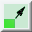
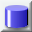
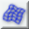
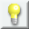
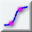
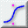
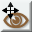
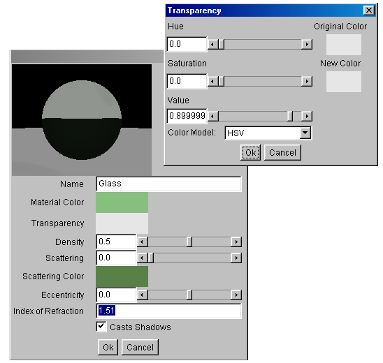
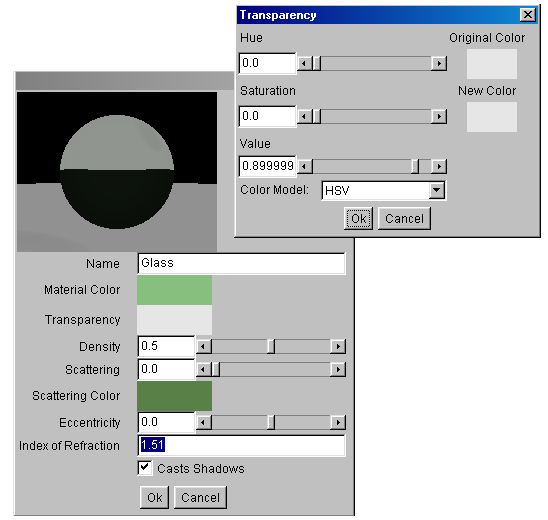

| mover objeto |  |
girar objeto | |
| cambiar tamaño de objeto |  |  |
crear caja |
| crear esfera |  |
 | crear cilindro |
| crear malla de aproximación |  |  |
crear polígono |
| crear cámara |  |
 | crear fuente de luz |
| crear curva interpolada |  |  | crear curva aproximada |
| mover el punto de vista |  |  |
girar el punto de vista |
 para cambiar la vista de abajo a la derecha (Camera1 - Cámara 1). Ahora puedes ver el modelo desde el ángulo que quieras. El resultado debería tener este aspecto:
para cambiar la vista de abajo a la derecha (Camera1 - Cámara 1). Ahora puedes ver el modelo desde el ángulo que quieras. El resultado debería tener este aspecto:

 Las curvas aproximadas no son muy intuitivas, pero permiten determinar la dirección de la curva con más exactitud que las curvas interpoladas. La dirección de la curva al principio y al final la determina el único punto adyacente. La curva es vertical en el punto 5 porque los puntos 4 y 6 sólo están desplazados verticalmente respecto a él. En general, la curva en cualquier punto se determina por el punto que lo precede inmediatamente y los dos que le siguen (la curva es una aproximación cuadrática, o aproximación de tercer orden).
Utilizaremos como eje central del frasco de cristal la línea que va entre los extremos finales de la curva. En nuestro dibujo es el eje Y, pero utilizar la primera línea da como resultado un objeto sólido. Para crear el objeto torneado, primero selecciona la curva y a continuación selecciona en el menú Tool→Lathe (Herramienta→Tornear). En la ventana de ajuste de los parámetros del torneado, selecciona como eje del torno (Lathe Axis) la línea que atraviesa los puntos extremos (Line through endpoints). Obsérvalo en la siguiente figura.
Las curvas aproximadas no son muy intuitivas, pero permiten determinar la dirección de la curva con más exactitud que las curvas interpoladas. La dirección de la curva al principio y al final la determina el único punto adyacente. La curva es vertical en el punto 5 porque los puntos 4 y 6 sólo están desplazados verticalmente respecto a él. En general, la curva en cualquier punto se determina por el punto que lo precede inmediatamente y los dos que le siguen (la curva es una aproximación cuadrática, o aproximación de tercer orden).
Utilizaremos como eje central del frasco de cristal la línea que va entre los extremos finales de la curva. En nuestro dibujo es el eje Y, pero utilizar la primera línea da como resultado un objeto sólido. Para crear el objeto torneado, primero selecciona la curva y a continuación selecciona en el menú Tool→Lathe (Herramienta→Tornear). En la ventana de ajuste de los parámetros del torneado, selecciona como eje del torno (Lathe Axis) la línea que atraviesa los puntos extremos (Line through endpoints). Obsérvalo en la siguiente figura.
 El objeto torneado se centra automáticamente en 0,0,0. Ahí es exactamente donde lo queremos en este caso, así que dejémoslo (por supuesto que no ha sido coincidencia, ¡lo he planeado así!). La curva de aproximación que creamos hace un rato ahora sobra. La puedes eliminar, pero no es necesario porque no aparece en la representación final. Para eliminar un objeto se selecciona (en las vistas o en la lista de objetos) y se pulsa la tecla Supr del teclado. También se puede hacer con la opción del menú Edit→Clear (Edición→Eliminar).
. Mantén pulsada la tecla Control mientras mueves el punto de vista para agrandarla y empequeñecerla. Y también puedes girar la cámara manteniendo pulsada la tecla Control mientras giras el punto de vista. Otras formas de colocar la cámara son las herramientas "mover objeto" y "girar objeto" , o la opción del menú Layout Object (Disposición del Objeto). La cámara es un objeto como cualquier otro. Una buena posición puede ser una en la que se vean la tapa de arriba y otros dos lados del objeto.
Después hay que iluminar la escena. Como puedes ver, ya había una fuente de luz en la escena desde el principio de la sesión, Light 1 (Luz 1). La fuente de luz habría que colocarla de modo que ilumine la parte del objeto a la que estamos mirando. Según la orientación de la cámara, probablemente Light 1 (Luz 1) no esté bien colocada. Como además esta fuente de luz está lejos, la vamos a eliminar y a crear una nueva. AoI contempla tres tipos de fuentes de luz: luces puntuales, luces direccionales y focos de luz. Vamos a usar la más simple de las tres, la luz puntual. Sigue los siguientes pasos para iluminar correctamente la escena:
El objeto torneado se centra automáticamente en 0,0,0. Ahí es exactamente donde lo queremos en este caso, así que dejémoslo (por supuesto que no ha sido coincidencia, ¡lo he planeado así!). La curva de aproximación que creamos hace un rato ahora sobra. La puedes eliminar, pero no es necesario porque no aparece en la representación final. Para eliminar un objeto se selecciona (en las vistas o en la lista de objetos) y se pulsa la tecla Supr del teclado. También se puede hacer con la opción del menú Edit→Clear (Edición→Eliminar).
. Mantén pulsada la tecla Control mientras mueves el punto de vista para agrandarla y empequeñecerla. Y también puedes girar la cámara manteniendo pulsada la tecla Control mientras giras el punto de vista. Otras formas de colocar la cámara son las herramientas "mover objeto" y "girar objeto" , o la opción del menú Layout Object (Disposición del Objeto). La cámara es un objeto como cualquier otro. Una buena posición puede ser una en la que se vean la tapa de arriba y otros dos lados del objeto.
Después hay que iluminar la escena. Como puedes ver, ya había una fuente de luz en la escena desde el principio de la sesión, Light 1 (Luz 1). La fuente de luz habría que colocarla de modo que ilumine la parte del objeto a la que estamos mirando. Según la orientación de la cámara, probablemente Light 1 (Luz 1) no esté bien colocada. Como además esta fuente de luz está lejos, la vamos a eliminar y a crear una nueva. AoI contempla tres tipos de fuentes de luz: luces puntuales, luces direccionales y focos de luz. Vamos a usar la más simple de las tres, la luz puntual. Sigue los siguientes pasos para iluminar correctamente la escena:

 Bastante aburrido ¿no? Todo de ese blanco tan soso. Queremos madera y cristal, así que tendremos que añadir texturas.
Bastante aburrido ¿no? Todo de ese blanco tan soso. Queremos madera y cristal, así que tendremos que añadir texturas.
 Las texturas procedurales 3D determinan el color, la dureza, la reflexión y otras propiedades de las superficies como función de las coordenadas tridimensionales. Para una posición dada en el espacio, la textura define el aspecto de la superficie de una figura, como si hubiéramos recortado la figura de un bloque sólido de este "material". Sin embargo, para aquellos objetos de los que realmente vemos su interior -objetos transparentes-, habría que usar un material para definir su interior, no una textura. Las texturas sólo determinan el aspecto de la superficie de los objetos.
Las funciones que transforman las coordenadas tridimensionales en valores de propiedades de texturas se crean conectando gráficamente componentes funcionales. Hay seis categorías de componentes:
Las texturas procedurales 3D determinan el color, la dureza, la reflexión y otras propiedades de las superficies como función de las coordenadas tridimensionales. Para una posición dada en el espacio, la textura define el aspecto de la superficie de una figura, como si hubiéramos recortado la figura de un bloque sólido de este "material". Sin embargo, para aquellos objetos de los que realmente vemos su interior -objetos transparentes-, habría que usar un material para definir su interior, no una textura. Las texturas sólo determinan el aspecto de la superficie de los objetos.
Las funciones que transforman las coordenadas tridimensionales en valores de propiedades de texturas se crean conectando gráficamente componentes funcionales. Hay seis categorías de componentes:


 La textura no es del todo realista pero tendrá que valer por ahora. Para crear texturas más complejas, lee la sección sobre texturas del Manual de Art-of-Illusion.
Asignaremos esta textura a los tableros superior e inferior y a los palos que los unen que creamos antes. Selecciona todas las figuras a las que hay que asignarles la textura de madera. Después selecciona la opción del menú Object→Set Texture (Objeto→Poner Textura). A continuación selecciona la textura Madera y pulsa Aceptar.
Ahora selecciona sólo los tableros superior e inferior. Vuelve a invocar la ventana de poner textura, y pulsa en el botón etiquetado Edit Mapping (Editar Mapeado). En esta ventana puedes cambiar de tamaño, desplazar y girar la textura para adaptarse al objeto. Sólo vamos a girar la textura, para alcanzar el siguiente resultado:
La textura no es del todo realista pero tendrá que valer por ahora. Para crear texturas más complejas, lee la sección sobre texturas del Manual de Art-of-Illusion.
Asignaremos esta textura a los tableros superior e inferior y a los palos que los unen que creamos antes. Selecciona todas las figuras a las que hay que asignarles la textura de madera. Después selecciona la opción del menú Object→Set Texture (Objeto→Poner Textura). A continuación selecciona la textura Madera y pulsa Aceptar.
Ahora selecciona sólo los tableros superior e inferior. Vuelve a invocar la ventana de poner textura, y pulsa en el botón etiquetado Edit Mapping (Editar Mapeado). En esta ventana puedes cambiar de tamaño, desplazar y girar la textura para adaptarse al objeto. Sólo vamos a girar la textura, para alcanzar el siguiente resultado:
 Ahora los palos. Selecciónalos todos y vuelve a editar el mapeado. Crea un mapeado como este:
Ahora los palos. Selecciónalos todos y vuelve a editar el mapeado. Crea un mapeado como este:
 Vamos a ver cómo ha quedado. La imagen representada tiene esta pinta:
Vamos a ver cómo ha quedado. La imagen representada tiene esta pinta:

 Para crear un material nuevo, selecciona Scene→Materials (Escena→Materiales) y pulsa en el botón New (Nuevo). Este nuevo material también se puede llamar Cristal. Tiene que ser un uniform material (material uniforme). Copia los parámetros del material de la imagen que sigue. Al color de un material lo afectan dos parámetros: Material Color (Color del Material) y Transparent Color (Color Transparente).
Ambos colores atenúan el color de la luz al atravesar el material. El color del material sólo afecta a la luz que llega diréctamente a la cámara, es el color que el objeto parece tener. El color transparente afecta a toda la luz que atraviesa el objeto, y también colorea las sombras que el objeto pueda proyectar. Sin embargo, el primer color es más fácil de usar porque especifica de qué color se verá el objeto. El color transparente, en cambio, especifica la fracción de rojo, verde y azul que se deja pasar. El resto de la luz se refleja y determina el color del objeto. El valor de Density (Densidad) determina cuánto se atenúa la luz. El valor cero hace que no se atenúe en absoluto. Para nuestro material de cristal definiremos un sencillo color de material verdoso que sólo se dejará ver en objetos muy masivos.

Para crear un material nuevo, selecciona Scene→Materials (Escena→Materiales) y pulsa en el botón New (Nuevo). Este nuevo material también se puede llamar Cristal. Tiene que ser un uniform material (material uniforme). Copia los parámetros del material de la imagen que sigue. Al color de un material lo afectan dos parámetros: Material Color (Color del Material) y Transparent Color (Color Transparente).
Ambos colores atenúan el color de la luz al atravesar el material. El color del material sólo afecta a la luz que llega diréctamente a la cámara, es el color que el objeto parece tener. El color transparente afecta a toda la luz que atraviesa el objeto, y también colorea las sombras que el objeto pueda proyectar. Sin embargo, el primer color es más fácil de usar porque especifica de qué color se verá el objeto. El color transparente, en cambio, especifica la fracción de rojo, verde y azul que se deja pasar. El resto de la luz se refleja y determina el color del objeto. El valor de Density (Densidad) determina cuánto se atenúa la luz. El valor cero hace que no se atenúe en absoluto. Para nuestro material de cristal definiremos un sencillo color de material verdoso que sólo se dejará ver en objetos muy masivos.
